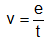
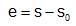
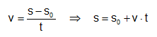
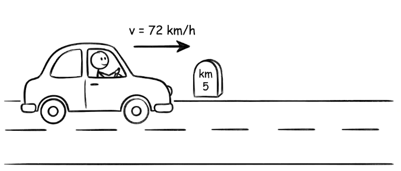

¡Este es el movimiento más simple que se puede estudiar!
La trayectoria es una línea recta.
La rapidez media es la misma que la rapidez instantánea, siempre constante.
En esas condiciones, la velocidad es un vector que mantiene siempre su dirección, módulo y sentido. Su módulo será:

Teniendo en cuenta que en este caso el espacio recorrido será

, es decir, posición final menos posición inicial, quedará:
que es la fórmula para el movimiento rectilíneo uniforme (MRU).
¡¡¡A calcular!!!
{}
Un coche se mueve por una carretera recta a 72 km/h.
En un instante determinado pasa por la marca del kilómetro 5.

Imagen generada por IA (ChatGPT) CC BY-SA 4.0
Puntuación.